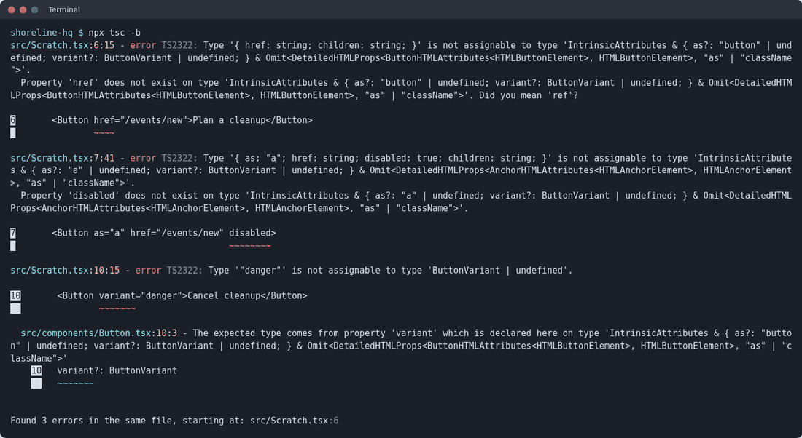
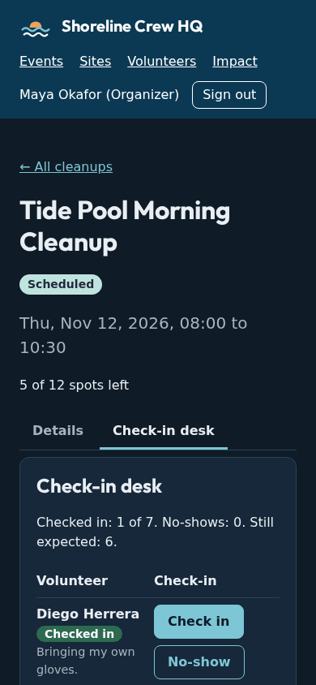

🧩 Lesson 5.4: Component Patterns
Every component you have built so far does its own job with its own props. Today you build components that other components plug into: a set of tabs whose parts quietly agree on which tab is open, a list that will render anything you hand it, and one button that can also be a link. These are the patterns behind the component libraries you will meet at work, and with TypeScript each connection is checked, so plugging a part in wrong is an error in your editor instead of a bug report. By the end, a completed cleanup in the HQ shows its impact report on its own tab, and the check-in desk sits on a tab of its own on the day.
🎯 Learning Objectives
By the end of this lesson, you will be able to:
- Build compound components that share state through a private, typed context, and explain when they beat one big configuration prop
- Make tabs that follow the accessible tabs pattern: roles,
aria-selected, one tab stop and arrow keys - Write a generic component with a render prop, and let TypeScript infer its type parameter from the props
- Type a polymorphic component whose props follow its
asprop, withElementTypeandComponentPropsWithRef - Choose between plain props, children, compound components, render props and an
asprop for a new component
📦 Code for this lesson
Starting code: lesson-20-start.zip · Finished code: lesson-20-end.zip. Each folder has a README with the commands to run it. Copy .env.example to .env.local in shoreline-hq before npm run dev.
In This Lesson
🔌 Components That Others Plug Into
Since Lesson 3.2 you have shaped components with props and children: Card takes a title and whatever goes inside, Badge takes a label and a tone. That covers most of an app. Three situations need more:
- Several components that only work together. A tab means nothing without its panel. You want to write the tabs and the panels as separate pieces of JSX, in any order, yet have them agree on which one is open.
- A component that owns the frame but not the contents. A list knows how to lay itself out and what to say when it is empty, but it cannot know whether it holds cleanups, beach sites or debris counts.
- One look on different elements. "Plan a cleanup" should look like the HQ's main button, but it goes to another page, so it must be a link.
The three patterns of this lesson answer them: compound components, render props and polymorphic components. None of them needs a new React API. They are ways of combining what you already know (context, generics, function props) so that a component is easy to plug into and hard to plug into wrong.
💡 Mental model: the check-in table
On the morning of a cleanup, the crew sets up a check-in table. Compound: everyone working at the table reads the same clipboard, so nobody has to be told which page is open; they just look. Render prop: the table hands each arriving volunteer to whoever is on name tags, and that person decides what the tag says. Polymorphic: the crew vest looks the same whether a volunteer or the harbor master wears it; what changes is who is inside.
💡 Why this matters
Open the docs of any React component library a team is likely to use (Radix, React Aria, Headless UI, MUI, Chakra) and you will find these three patterns on the first page: Tabs.List and Tabs.Trigger, renderItem, as or component props. Knowing how they work, and how they are typed, turns those docs from magic into something you can read, debug and, when a team builds its own design system, write.
🗂️ Compound Components
Here is the cleanup page's problem. A completed cleanup has details and an impact report; on the day of a cleanup, organizers need the check-in desk. The first design that comes to mind is one component with one big prop, an array that describes every tab:
import { useState, type ReactNode } from 'react'
interface TabConfig {
id: string
label: string
content: ReactNode
}
// One component, one big prop: every tab described in an array
function ConfigTabs({ tabs }: { tabs: TabConfig[] }) {
const [selected, setSelected] = useState(tabs[0]?.id)
return (
<>
{tabs.map((tab) => (
<button key={tab.id} type="button" onClick={() => setSelected(tab.id)}>
{tab.label}
</button>
))}
{tabs.find((tab) => tab.id === selected)?.content}
</>
)
}
export function ConfigDemo({ checkInDay }: { checkInDay: boolean }) {
return (
<ConfigTabs
tabs={[
{ id: 'details', label: 'Details', content: <p>Meet at the stairs.</p> },
...(checkInDay ? [{ id: 'desk', label: 'Check-in desk', content: <p>The desk</p> }] : []),
]}
/>
)
}It type-checks and lints cleanly, and for three fixed tabs it would do. But look at what the caller has to write: content squeezed into objects, a spread of a conditional array to leave a tab out, and no way to put anything between the tab buttons and the panel without adding another prop. Every new need (an icon in one tab, a badge with a count, a wrapper around the panels) becomes a new property in TabConfig.
A compound component splits the one component into parts that are written as ordinary JSX, the way <select> and <option> are in HTML. This is how the cleanup page uses the HQ's Tabs by the end of the lesson:
<Tabs defaultTab={checkInDay ? 'desk' : 'details'}>
<TabList label="About this cleanup">
<Tab id="details">Details</Tab>
{checkInDay && <Tab id="desk">Check-in desk</Tab>}
{completed && <Tab id="impact">Impact</Tab>}
</TabList>
<TabPanel id="details">
<AboutCleanup event={event} />
</TabPanel>
{checkInDay && (
<TabPanel id="desk">
<TodaysDesk eventId={event.id} />
</TabPanel>
)}
{completed && (
<TabPanel id="impact">
<ImpactSummary eventId={event.id} />
</TabPanel>
)}
</Tabs>Leaving a tab out is a plain &&; the panels hold any JSX; the parts read like the page they draw. But how does a <Tab> know it is the selected one, when nobody passes it a selected prop? The parent shares its state through a context that only the parts can see, exactly the pattern you built for sign-in in Lesson 5.2:
// What every part of one set of tabs shares
interface TabsValue {
selected: string
select: (tab: string) => void
/** From useId: makes the tab and panel ids unique, even with two sets of tabs on a page */
baseId: string
}
// Not exported: only the parts below can read it
const TabsContext = createContext<TabsValue | undefined>(undefined)
function useTabs(part: string): TabsValue {
const value = useContext(TabsContext)
if (value === undefined) {
throw new Error(`<${part}> must be used inside <Tabs>`)
}
return value
}
interface TabsProps {
/** The id of the tab that is selected at first */
defaultTab: string
children: ReactNode
}
// The parent: owns which tab is selected and shares it with the parts inside
export function Tabs({ defaultTab, children }: TabsProps) {
const [selected, setSelected] = useState(defaultTab)
const baseId = useId()
return <TabsContext value={{ selected, select: setSelected, baseId }}>{children}</TabsContext>
}- The context is not exported. Only
Tab,TabListandTabPanelin the same file can read it. That is what makes the parts a family: the rest of the app sees four components and nothing else. TabsValue | undefinedand a throwing Hook, as in Lesson 5.2: a part rendered outside<Tabs>fails loudly with a message that says what to fix (Common Mistakes shows it happening).useId()gives each set of tabs its own prefix, so the ids that connect a tab to its panel never clash, even with two sets of tabs on one page.- The value object is new on every render of
Tabs. Lesson 5.3's lesson applies: with the React Compiler on, it is cached untilselectedchanges, so you write it plainly.
Tabs people can use: the accessible tabs pattern
A row of buttons that swaps content looks like tabs. To be tabs for a keyboard or screen reader user, it follows the tabs pattern from the WAI-ARIA Authoring Practices, the reference most component libraries follow:
| Piece | What it does | In Tabs.tsx |
|---|---|---|
role="tablist" + aria-label | Screen readers announce the list's name and role ("About this cleanup", tab list) | TabList |
role="tab" + aria-selected | Each tab says whether it is the selected one ("Impact, tab, selected, 2 of 2") | Tab |
aria-controls / aria-labelledby | Connect each tab to its panel, both ways, by id | Tab, TabPanel |
One tab stop: tabIndex 0 on the selected tab, -1 on the others | Tab enters the tab list once and leaves to the panel, instead of visiting every tab | Tab |
| Arrow keys, Home, End | Move between tabs; the HQ selects the tab as focus moves (automatic activation) | moveBetweenTabs |
role="tabpanel", hidden when not selected | Only the selected panel is shown and read out | TabPanel |
The keyboard part is a few lines of DOM work, and TypeScript keeps it honest:
// Arrow keys move to the next or previous tab (and wrap around); Home and End jump to the ends
function moveBetweenTabs(event: KeyboardEvent<HTMLButtonElement>) {
const list = event.currentTarget.closest('[role="tablist"]')
if (list === null) return
const tabs = [...list.querySelectorAll<HTMLButtonElement>('[role="tab"]')]
const current = tabs.indexOf(event.currentTarget)
const moves: Record<string, number> = {
ArrowRight: current + 1,
ArrowLeft: current - 1 + tabs.length,
Home: 0,
End: tabs.length - 1,
}
const move = moves[event.key]
if (move === undefined) return // any other key: not ours
const next = tabs[move % tabs.length]
if (next === undefined) return
event.preventDefault() // Home and End would scroll the page
next.focus()
next.click() // select it, as a click would
}KeyboardEvent<HTMLButtonElement> (React's event type, imported from react) makes event.currentTarget a button. querySelectorAll<HTMLButtonElement> is a generic you call with the element type you know is there. And because the HQ has noUncheckedIndexedAccess on since Lesson 2.4, both moves[event.key] and tabs[…] are typed … | undefined, so the two early returns are not caution for its own sake: TypeScript will not let you call next.focus() without them.
💡 The ids are plain strings
Tab and TabPanel take id: string, so TypeScript cannot tell you that "impact" and "impacts" do not match. It is a real limit of a shared context: the parent cannot pass a type parameter down to its children through context, because context is set up when the module loads, not when you write <Tabs>. Common Mistakes shows what a typo does, and Exercise 3 shows a typed way around it.
🎁 Render Props and Generic Components
The HQ draws lists in three places: the cleanups on /events (three times), the beach sites on /sites, and, after today, the debris counts of an impact report. Each needs the same frame: a <ul> with a layout, a key per item, and a friendly message when there is nothing to show. Only what each item looks like differs. So the list takes a function that draws one item:
interface DataListProps<T> {
items: T[]
/** A key for each item: unique in the list and the same on every render */
getKey: (item: T) => string
/** What one item looks like: a render prop, called once per item */
renderItem: (item: T) => ReactNode
/** Shown instead of an empty list */
emptyMessage: string
/** 'grid': cards side by side (the default); 'plain': a simple bulleted list */
layout?: 'grid' | 'plain'
}A render prop is a prop whose value is a function that returns something to render: renderItem here. The component decides when and where to call it; the caller decides what comes out. You have used the idea since Lesson 3.3 without the name: the arrow you pass to .map() is exactly that.
The <T> makes it a generic component, written like Lesson 2.3's generic functions (function DataList<T>(…); a function declaration needs no trailing comma). You almost never write the type argument yourself. TypeScript infers T from items and then checks the functions against it:
<DataList
items={sites.state.data}
getKey={(site) => site.id}
emptyMessage="No beach sites yet."
renderItem={(site) => <SiteCard site={site} />}
/>sites.state.data is a Site[], so T is Site, and the site in both arrows is a Site: hover over it in VS Code and the tooltip says (parameter) site: Site. Write site.nmae and you get the usual red underline. The same component, given the debris counts later in the project, infers T as DebrisCount, with no change to DataList.
Why getKey and not item.id?
A tempting shortcut is to require an id on every item, with a generic constraint (Lesson 2.3's extends), and use it as the key:
import type { ReactNode } from 'react'
import type { DebrisCount } from './api/types.ts'
interface IdListProps<T extends { id: string }> {
items: T[]
renderItem: (item: T) => ReactNode
}
// Only for items that have an id: the constraint lets the list use item.id as the key
function IdList<T extends { id: string }>({ items, renderItem }: IdListProps<T>) {
return (
<ul>
{items.map((item) => (
<li key={item.id}>{renderItem(item)}</li>
))}
</ul>
)
}
export function PiecesCounted({ items }: { items: DebrisCount[] }) {
return <IdList items={items} renderItem={(item) => `${item.category}: ${item.count}`} />
}Expected output (npx tsc -b)
src/Scratch.tsx:21:18 - error TS2322: Type 'DebrisCount[]' is not assignable to type '{ id: string; }[]'.
Property 'id' is missing in type 'DebrisCount' but required in type '{ id: string; }'.
21 return <IdList items={items} renderItem={(item) => `${item.category}: ${item.count}`} />
~~~~~
src/Scratch.tsx:10:29 - 'id' is declared here.
10 function IdList<T extends { id: string }>({ items, renderItem }: IdListProps<T>) {
~~
src/Scratch.tsx:5:3 - The expected type comes from property 'items' which is declared here on type 'IntrinsicAttributes & IdListProps<{ id: string; }>'
5 items: T[]
~~~~~
src/Scratch.tsx:21:62 - error TS2339: Property 'category' does not exist on type '{ id: string; }'.
21 return <IdList items={items} renderItem={(item) => `${item.category}: ${item.count}`} />
~~~~~~~~
src/Scratch.tsx:21:80 - error TS2339: Property 'count' does not exist on type '{ id: string; }'.
21 return <IdList items={items} renderItem={(item) => `${item.category}: ${item.count}`} />
~~~~~
Found 3 errors in the same file, starting at: src/Scratch.tsx:21Three errors, one cause. Read the first: a DebrisCount is { category, count } and has no id, so it does not satisfy the constraint. TypeScript then falls back to T = { id: string }, which is why the next two errors say category and count do not exist. That is a good habit to build: when one line has several errors, fix the first and check again. The fix here is not a fake id. A constraint should ask for exactly what the component needs, and DataList only needs a key, so it asks the caller for a getKey function and works for any T.
💡 Render props and custom Hooks
Before Hooks (React 16.8), render props were also the main way to share logic: <MouseTracker render={(position) => …} />. Today a custom Hook does that job better (Lesson 4.2's useApi is one), and you will see logic-sharing render props mostly in older code. Render props are still the right tool when a component owns markup and needs the caller to fill in a part of it, as DataList does. A variation passes the function as children, <Loaded>{(data) => …}</Loaded>: Exercise 2 builds one.
🎭 Polymorphic Components
The HQ has two button looks, primary and secondary, in Button.module.css since Lesson 3.6, and a third, a button that looks like a link, hiding in EventCard.module.css. Every button in the app imports the CSS module and picks a class by hand, which means nothing stops a typo, a forgotten type="button" or a fourth look sneaking in. A Button component fixes that. And the "Plan a cleanup" link should get the primary look too, while staying a link: it goes to another page, so it must be an <a> that people can middle-click or open in a new tab.
A polymorphic component renders whatever element or component its as prop names, and its props change to match:
import type { ComponentPropsWithRef, ElementType } from 'react'
import styles from './Button.module.css'
export type ButtonVariant = 'primary' | 'secondary' | 'link'
/** Button's own props, plus every prop of the element or component named in `as` */
type ButtonProps<C extends ElementType> = {
/** What to render: 'button' (the default), 'a', or a component such as a router link */
as?: C
variant?: ButtonVariant
} & Omit<ComponentPropsWithRef<C>, 'as' | 'className'>
// The HQ's one button look, on whatever element the job needs
export function Button<C extends ElementType = 'button'>({
as,
variant = 'secondary',
...props
}: ButtonProps<C>) {
const Component = as ?? 'button'
// A <button> in a form submits unless told otherwise: make "button" the default type
const type = Component === 'button' ? 'button' : undefined
return <Component type={type} {...props} className={styles[variant]} />
}Read the type from the inside out:
ElementTypeis React's type for "anything you can render as a tag": a string like'button'or'a', or a component.C extends ElementType = 'button'is a generic with a default: when you do not passas,Cis'button'.ComponentPropsWithRef<C>looks up the props of whateverCis:ComponentPropsWithRef<'a'>hashrefandtarget;ComponentPropsWithRef<'button'>hastypeanddisabled. It includesref, which in React 19 is an ordinary prop (Lesson 4.3).Omit<…, 'as' | 'className'>(a utility type from Lesson 2.4) removes the two propsButtonowns. Callers choose avariant; they cannot slip a differentclassNamepast it.- Inside,
as ?? 'button'is the element to render, in a variable with a capital letter, because JSX treats a lowercase name as an HTML tag.typedefaults to"button"only when the element is a button, and the caller's owntype="submit"(spread after it) still wins.
Now the props really do follow as. Three wrong uses:
<p>
<Button href="/events/new">Plan a cleanup</Button>
<Button as="a" href="/events/new" disabled>
Plan a cleanup
</Button>
<Button variant="danger">Cancel cleanup</Button>
</p>
Button, three errors. The props TypeScript checks against follow the as prop: a button gets button props, an a gets link props.Expected output (npx tsc -b)
src/Scratch.tsx:6:15 - error TS2322: Type '{ href: string; children: string; }' is not assignable to type 'IntrinsicAttributes & { as?: "button" | undefined; variant?: ButtonVariant | undefined; } & Omit<DetailedHTMLProps<ButtonHTMLAttributes<HTMLButtonElement>, HTMLButtonElement>, "as" | "className">'.
Property 'href' does not exist on type 'IntrinsicAttributes & { as?: "button" | undefined; variant?: ButtonVariant | undefined; } & Omit<DetailedHTMLProps<ButtonHTMLAttributes<HTMLButtonElement>, HTMLButtonElement>, "as" | "className">'. Did you mean 'ref'?
6 <Button href="/events/new">Plan a cleanup</Button>
~~~~
src/Scratch.tsx:7:41 - error TS2322: Type '{ as: "a"; href: string; disabled: true; children: string; }' is not assignable to type 'IntrinsicAttributes & { as?: "a" | undefined; variant?: ButtonVariant | undefined; } & Omit<DetailedHTMLProps<AnchorHTMLAttributes<HTMLAnchorElement>, HTMLAnchorElement>, "as" | "className">'.
Property 'disabled' does not exist on type 'IntrinsicAttributes & { as?: "a" | undefined; variant?: ButtonVariant | undefined; } & Omit<DetailedHTMLProps<AnchorHTMLAttributes<HTMLAnchorElement>, HTMLAnchorElement>, "as" | "className">'.
7 <Button as="a" href="/events/new" disabled>
~~~~~~~~
src/Scratch.tsx:10:15 - error TS2322: Type '"danger"' is not assignable to type 'ButtonVariant | undefined'.
10 <Button variant="danger">Cancel cleanup</Button>
~~~~~~~
src/components/Button.tsx:10:3 - The expected type comes from property 'variant' which is declared here on type 'IntrinsicAttributes & { as?: "button" | undefined; variant?: ButtonVariant | undefined; } & Omit<DetailedHTMLProps<ButtonHTMLAttributes<HTMLButtonElement>, HTMLButtonElement>, "as" | "className">'
10 variant?: ButtonVariant
~~~~~~~
Found 3 errors in the same file, starting at: src/Scratch.tsx:6The messages are long because they print the whole computed props type, but each ends with the line that matters: a button has no href (TypeScript even guesses you meant ref), a link has no disabled, and "danger" is not a ButtonVariant. Scroll to the last line of a long error first; that is where TypeScript says what is wrong.
Why a component in as matters: React Router in Lesson 6.1
Today "Plan a cleanup" is <Button as="a" href="/events/new">, and following it reloads the whole app. In Lesson 6.1, React Router's <Link> takes over links, and it wants a to prop instead of href. Because as accepts any component, Button needs no change for that. Here is the idea with a small stand-in for Link:
import type { ReactNode } from 'react'
import { Button } from './components/Button.tsx'
interface RouteLinkProps {
to: string
className?: string
children: ReactNode
}
// A stand-in for React Router's <Link> (Lesson 6.1): it takes `to`, not `href`
function RouteLink({ to, className, children }: RouteLinkProps) {
return (
<a href={to} className={className}>
{children}
</a>
)
}
export function PlanLink() {
return (
<Button as={RouteLink} to="/events/new" variant="primary">
Plan a cleanup
</Button>
)
}It compiles and lints cleanly, and Button now requires to, typed from RouteLinkProps; passing href instead is an error, like the ones above. In 6.1 the only change is at the call site: as={Link} to="/events/new".
🧭 Choosing a Pattern
Patterns are tools, not goals. Start with the simplest thing that works and move down the table only when the one above gets in the way:
| You need… | Reach for | In the HQ |
|---|---|---|
| A few settings | Plain props | Badge, StatusBadge |
| A frame around any content | children | Card, AppLayout, Dialog |
| Parts that only work together, arranged by the caller | Compound components + a private context | Tabs, TabList, Tab, TabPanel |
| A frame that draws the caller's items, or hands the caller data | A render prop (often generic) | DataList<T> |
| Shared logic without markup | A custom Hook | useApi, useDebouncedValue |
| One look or behavior on different elements | A polymorphic as prop | Button |
⚠️ Common Mistakes
⚠️ A part outside its parent
A cleanup without tabs still shows its details. It is tempting to wrap them in a TabPanel anyway, so both branches look alike:
) : (
<TabPanel id="details">
<AboutCleanup event={event} />
</TabPanel>
)}It type-checks and lints cleanly: TypeScript cannot see where a component is rendered. Measured on the dev server, opening Weekend Cove Cleanup (no tabs) showed "Could not load this cleanup. Something unexpected went wrong. Try again in a moment." with a Try again button, and the browser's Console showed the reason: <TabPanel> must be used inside <Tabs>. useTabs threw, the page's own error boundary from Lesson 4.4 caught it, and the message from the throwing Hook pointed straight at the fix. That is why useTabs takes the part's name.
⚠️ Removing hidden panels instead of hiding them
"Only render the selected panel" sounds efficient:
export function TabPanel({ id, children }: TabPanelProps) {
const { selected, baseId } = useTabs('TabPanel')
// Only the selected panel is rendered
if (id !== selected) return null
return (
<div
role="tabpanel"
id={`${baseId}-panel-${id}`}
aria-labelledby={`${baseId}-tab-${id}`}
tabIndex={0}
className={styles.panel}
>
{children}
</div>
)
}Measured, signed in as Maya on Tide Pool Morning Cleanup: check in Diego Herrera, switch to Details and back to Check-in desk, and the desk says "Checked in: 0 of 7" again, and the roster was requested from shoreline-api again. Removing a panel unmounts everything in it, and an unmounted component's state (here the desk's reducer from Lesson 5.1) is gone. The HQ's TabPanel keeps every panel mounted and sets hidden: switching tabs keeps the marks, and no request is sent. The price is that hidden panels still load their data (the Impact panel asks for its report when the page opens), which is fine for a few small panels.
⚠️ Tab and panel ids that do not match
Write <TabPanel id="impacts"> for <Tab id="impact"> and npx tsc -b says nothing: both are just strings. Measured: clicking Impact selected the tab and showed no panel at all, with no error anywhere, and the tab's aria-controls pointed at an id that did not exist. When a tab shows nothing, compare the two ids first. (Exercise 3 makes this mistake a type error.)
🛠️ Project: Tabs, Lists and One Button for the HQ
You will give the HQ one Button and use it everywhere, replace the hand-written lists with a generic DataList, and build compound Tabs for the cleanup page, with a new Impact tab that reads each completed cleanup's impact report. Start both servers (node server.ts in shoreline-api, npm run dev in shoreline-hq).

DataList.Step 1: The Button component (8 min)
Create src/components/Button.tsx:
import type { ComponentPropsWithRef, ElementType } from 'react'
import styles from './Button.module.css'
export type ButtonVariant = 'primary' | 'secondary' | 'link'
/** Button's own props, plus every prop of the element or component named in `as` */
type ButtonProps<C extends ElementType> = {
/** What to render: 'button' (the default), 'a', or a component such as a router link */
as?: C
variant?: ButtonVariant
} & Omit<ComponentPropsWithRef<C>, 'as' | 'className'>
// The HQ's one button look, on whatever element the job needs
export function Button<C extends ElementType = 'button'>({
as,
variant = 'secondary',
...props
}: ButtonProps<C>) {
const Component = as ?? 'button'
// A <button> in a form submits unless told otherwise: make "button" the default type
const type = Component === 'button' ? 'button' : undefined
return <Component type={type} {...props} className={styles[variant]} />
}Button.module.css becomes the component's own stylesheet. Give it the link look (moved from EventCard.module.css in Step 2), and let the two button looks work on an <a> too (display: inline-block, no underline):
/* The app's button looks: Button.tsx picks one with its variant prop */
.primary,
.secondary {
display: inline-block; /* also when Button renders an <a> */
padding: 0.5rem 1rem;
border: 1px solid var(--link);
border-radius: 0.5rem;
font: inherit;
font-weight: 600;
text-decoration: none;
cursor: pointer;
}
.primary {
background: var(--link);
color: var(--page);
}
.secondary {
background: transparent;
color: var(--link);
}
/* Looks like a link, acts like a button: it shows, hides or opens something here */
.link {
padding: 0;
border: none;
background: none;
color: var(--link);
font: inherit;
text-decoration: underline;
cursor: pointer;
}styles[variant] picks the class whose name is the variant, which is why the variants are named exactly like the classes.
Step 2: Use it everywhere (10 min)
Every <button> that uses buttonStyles becomes a <Button>. The pattern is the same each time; here it is in LoadStatus.tsx:
import type { LoadState } from '../utils/loadState.ts'
-import buttonStyles from './Button.module.css'
+import { Button } from './Button.tsx'
import styles from './LoadStatus.module.css'
// ...
{onRetry && (
- <button type="button" className={buttonStyles.secondary} onClick={onRetry}>
- Try again
- </button>
+ <Button onClick={onRetry}>Try again</Button>
)}Change the import, then drop type="button" (now the default) and className={buttonStyles.secondary} (the default variant); buttonStyles.primary becomes variant="primary". Do the same in these files:
| File | Buttons |
|---|---|
src/App.tsx (import from ./components/Button.tsx) | Try again in PageCrashed |
src/components/EventFilters.tsx | Clear filters |
src/components/ConfirmDialog.tsx | the keep button; the confirm button with variant="primary" |
src/components/CheckInDesk.tsx | Undo last change (keep aria-disabled and onClick) |
src/components/RosterTable.tsx | Check in and No-show (keep aria-pressed) |
src/components/NewEventForm.tsx | Save as draft and Publish (variant="primary"); both keep type="submit", name, value, disabled |
src/pages/SignInPage.tsx (import from ../components/Button.tsx) | Sign in: type="submit", variant="primary" |
For example, the form's two buttons:
<Button type="submit" name="status" value="draft" disabled={isPending}>
Save as draft
</Button>
<Button
type="submit"
name="status"
value="scheduled"
variant="primary"
disabled={isPending}
>
Publish
</Button>In EventCard.tsx, the two link-looking buttons get variant="link" (import Button from ./Button.tsx):
<div className={styles.actions}>
- <button
- type="button"
- className={styles.toggle}
+ <Button
+ variant="link"
aria-expanded={showDetails}
onClick={() => setShowDetails((shown) => !shown)}
>
{showDetails ? 'Hide details' : 'Show details'}
<VisuallyHidden> for {event.title}</VisuallyHidden>
- </button>
+ </Button>
{canCancel && (
- <button
- type="button"
- className={styles.toggle}
- aria-haspopup="dialog"
- onClick={() => setConfirming(true)}
- >
+ <Button variant="link" aria-haspopup="dialog" onClick={() => setConfirming(true)}>
Cancel cleanup<VisuallyHidden> for {event.title}</VisuallyHidden>
- </button>
+ </Button>
)}and delete the .toggle rule (with its comment) from EventCard.module.css; it lives in Button.module.css now. Finally, the organizers' "Plan a cleanup" link on EventsPage.tsx becomes the first as user (import Button from ../components/Button.tsx):
{isOrganizer && (
<p>
- <a href="/events/new">Plan a cleanup</a>
+ <Button as="a" href="/events/new" variant="primary">
+ Plan a cleanup
+ </Button>
</p>
)}
<Button as="a" href="/events/new" variant="primary">: a real link, so it opens a page and works with a middle-click, but with the HQ's primary button look.Check that no file but Button.tsx still imports the stylesheet: search the project for Button.module.css (Ctrl+Shift+F, ⌘ Cmd+Shift+F on a Mac). One result means the HQ's button looks now live in one place. Measured in the browser: every button on the events page has a type, and "Plan a cleanup" is an <a href="/events/new"> with no type at all.
Step 3: A generic DataList (9 min)
Create src/components/DataList.tsx:
import type { ReactNode } from 'react'
import styles from './DataList.module.css'
interface DataListProps<T> {
items: T[]
/** A key for each item: unique in the list and the same on every render */
getKey: (item: T) => string
/** What one item looks like: a render prop, called once per item */
renderItem: (item: T) => ReactNode
/** Shown instead of an empty list */
emptyMessage: string
/** 'grid': cards side by side (the default); 'plain': a simple bulleted list */
layout?: 'grid' | 'plain'
}
// Any list: DataList owns the list, its layout and its empty state; the caller owns each item
export function DataList<T>({
items,
getKey,
renderItem,
emptyMessage,
layout = 'grid',
}: DataListProps<T>) {
if (items.length === 0) {
return <p className={styles.empty}>{emptyMessage}</p>
}
return (
<ul className={styles[layout]}>
{items.map((item) => (
<li key={getKey(item)}>{renderItem(item)}</li>
))}
</ul>
)
}Its styles are EventList.module.css's, renamed (.list becomes .grid), plus a .plain layout. Create src/components/DataList.module.css, then delete EventList.module.css:
/* As many 16rem columns as fit: one on a phone, three on a laptop */
.grid {
display: grid;
grid-template-columns: repeat(auto-fill, minmax(16rem, 1fr));
gap: 1.5rem;
margin: 0 0 2rem;
padding: 0;
list-style: none;
}
.plain {
margin: 0 0 1rem;
}
.empty {
margin: 0 0 2rem;
padding: 1rem 1.25rem;
border: 1px dashed var(--border);
border-radius: 0.75rem;
color: var(--text-muted);
}EventList keeps its job (cleanups, with each one's site) but hands the list itself to DataList. Replace the whole file:
import type { CleanupEvent, Site } from '../api/types.ts'
import { DataList } from './DataList.tsx'
import { EventCard } from './EventCard.tsx'
interface EventListProps {
events: CleanupEvent[]
sites: Site[]
emptyMessage: string
}
export function EventList({ events, sites, emptyMessage }: EventListProps) {
return (
<DataList
items={events}
getKey={(event) => event.id}
emptyMessage={emptyMessage}
renderItem={(event) => (
<EventCard event={event} site={sites.find((site) => site.id === event.siteId)} />
)}
/>
)
}And the sites page, which drew its cards in a plain <div>, gets a real list (import DataList from ../components/DataList.tsx):
{sites.state.kind === 'ready' ? (
- <div className={styles.grid}>
- {sites.state.data.map((site) => (
- <SiteCard key={site.id} site={site} />
- ))}
- </div>
+ <DataList
+ items={sites.state.data}
+ getKey={(site) => site.id}
+ emptyMessage="No beach sites yet."
+ renderItem={(site) => <SiteCard site={site} />}
+ />
) : (Reload /events and /sites: they look as before. Measured: /sites now has six <li> elements, so screen readers announce a list of six items, which the old <div> never did.
Step 4: Compound Tabs (15 min)
Create src/components/Tabs.tsx. You have met each part in the explanation above; here is the whole file:
import {
createContext,
useContext,
useId,
useState,
type KeyboardEvent,
type ReactNode,
} from 'react'
import styles from './Tabs.module.css'
// What every part of one set of tabs shares
interface TabsValue {
selected: string
select: (tab: string) => void
/** From useId: makes the tab and panel ids unique, even with two sets of tabs on a page */
baseId: string
}
// Not exported: only the parts below can read it
const TabsContext = createContext<TabsValue | undefined>(undefined)
function useTabs(part: string): TabsValue {
const value = useContext(TabsContext)
if (value === undefined) {
throw new Error(`<${part}> must be used inside <Tabs>`)
}
return value
}
interface TabsProps {
/** The id of the tab that is selected at first */
defaultTab: string
children: ReactNode
}
// The parent: owns which tab is selected and shares it with the parts inside
export function Tabs({ defaultTab, children }: TabsProps) {
const [selected, setSelected] = useState(defaultTab)
const baseId = useId()
return <TabsContext value={{ selected, select: setSelected, baseId }}>{children}</TabsContext>
}
interface TabListProps {
/** What the tabs are about, for screen readers: "About this cleanup" */
label: string
children: ReactNode
}
export function TabList({ label, children }: TabListProps) {
return (
<div role="tablist" aria-label={label} className={styles.list}>
{children}
</div>
)
}
// Arrow keys move to the next or previous tab (and wrap around); Home and End jump to the ends
function moveBetweenTabs(event: KeyboardEvent<HTMLButtonElement>) {
const list = event.currentTarget.closest('[role="tablist"]')
if (list === null) return
const tabs = [...list.querySelectorAll<HTMLButtonElement>('[role="tab"]')]
const current = tabs.indexOf(event.currentTarget)
const moves: Record<string, number> = {
ArrowRight: current + 1,
ArrowLeft: current - 1 + tabs.length,
Home: 0,
End: tabs.length - 1,
}
const move = moves[event.key]
if (move === undefined) return // any other key: not ours
const next = tabs[move % tabs.length]
if (next === undefined) return
event.preventDefault() // Home and End would scroll the page
next.focus()
next.click() // select it, as a click would
}
interface TabProps {
/** Matches the id of the TabPanel this tab shows */
id: string
children: ReactNode
}
export function Tab({ id, children }: TabProps) {
const { selected, select, baseId } = useTabs('Tab')
const isSelected = id === selected
return (
<button
type="button"
role="tab"
id={`${baseId}-tab-${id}`}
aria-selected={isSelected}
aria-controls={`${baseId}-panel-${id}`}
tabIndex={isSelected ? 0 : -1}
className={styles.tab}
onClick={() => select(id)}
onKeyDown={moveBetweenTabs}
>
{children}
</button>
)
}
interface TabPanelProps {
/** Matches the id of the Tab that shows this panel */
id: string
children: ReactNode
}
export function TabPanel({ id, children }: TabPanelProps) {
const { selected, baseId } = useTabs('TabPanel')
// Hidden, not removed: what is inside keeps its state (check-in marks) while another tab shows
return (
<div
role="tabpanel"
id={`${baseId}-panel-${id}`}
aria-labelledby={`${baseId}-tab-${id}`}
tabIndex={0}
hidden={id !== selected}
className={styles.panel}
>
{children}
</div>
)
}Two decisions worth noticing. The arrow keys are handled on each Tab, the element that has the focus, instead of on the tab list: oxlint's jsx-a11y(interactive-supports-focus) warns about a key handler on a role="tablist" element that cannot be focused itself. And next.click() selects the tab through its own onClick, so a key press and a click take the same path. Then src/components/Tabs.module.css:
/* A row of tabs over a line; the selected one is underlined in the link color */
.list {
display: flex;
flex-wrap: wrap;
gap: 0.25rem;
margin: 1.5rem 0 0;
border-bottom: 1px solid var(--border);
}
.tab {
padding: 0.5rem 1rem;
border: none;
border-bottom: 3px solid transparent;
background: none;
color: var(--text-muted);
font: inherit;
font-weight: 600;
cursor: pointer;
}
.tab[aria-selected='true'] {
border-bottom-color: var(--link);
color: var(--text);
}
.panel {
padding-top: 0.5rem;
}Exactly four exports, all components: the context and useTabs stay private, so Fast Refresh's lint rule from Lesson 5.2 has nothing to warn about.
Step 5: The impact report (12 min)
Completed cleanups have an impact report at GET /api/events/:id/impact (open http://localhost:4000/api/events/e01/impact to see one). As with every API answer since Lesson 2.4, the client checks its shape before anyone uses it. In src/api/client.ts, add DebrisCategory, DebrisCount and ImpactReport to the type import, the two checks before isApiErrorBody, and getImpact before postSignIn:
const debrisCategories: DebrisCategory[] = [
'plastic-bottles', 'plastic-bags', 'food-wrappers', 'bottle-caps', 'cigarette-butts',
'fishing-gear', 'glass', 'metal', 'foam', 'other',
]
function isDebrisCount(value: unknown): value is DebrisCount {
return (
isRecord(value) &&
debrisCategories.some((category) => category === value.category) &&
typeof value.count === 'number'
)
}
/** The organizers' summary of a completed cleanup (GET /api/events/:id/impact) */
function isImpactReport(value: unknown): value is ImpactReport {
return (
isRecord(value) &&
typeof value.eventId === 'string' &&
typeof value.volunteersAttended === 'number' &&
typeof value.bags === 'number' &&
typeof value.weightKg === 'number' &&
isListOf(isDebrisCount)(value.items) &&
typeof value.notes === 'string' &&
isStringArray(value.photoIds) &&
typeof value.submittedAt === 'string'
)
}
// ...
/** A completed cleanup's impact report. No report yet is an ApiError with status 404. */
export function getImpact(eventId: string, signal?: AbortSignal): Promise<ImpactReport> {
return getJSON(`/events/${encodeURIComponent(eventId)}/impact`, isImpactReport, signal)
}isListOf(isDebrisCount) is Lesson 4.1's helper turning a check for one item into a check for a list. Then the panel's content, src/components/ImpactSummary.tsx:
import { getImpact } from '../api/client.ts'
import type { DebrisCategory } from '../api/types.ts'
import { useApi } from '../hooks/useApi.ts'
import { DataList } from './DataList.tsx'
import { LoadStatus } from './LoadStatus.tsx'
// The API's labels for its debris categories (GET /api/meta lists the same ones)
const debrisLabels: Record<DebrisCategory, string> = {
'plastic-bottles': 'Plastic bottles',
'plastic-bags': 'Plastic bags',
'food-wrappers': 'Food wrappers',
'bottle-caps': 'Bottle caps',
'cigarette-butts': 'Cigarette butts',
'fishing-gear': 'Fishing line and nets',
glass: 'Glass',
metal: 'Metal and cans',
foam: 'Foam pieces',
other: 'Other',
}
interface ImpactSummaryProps {
eventId: string
}
// What a completed cleanup took off the beach, from its impact report
export function ImpactSummary({ eventId }: ImpactSummaryProps) {
const impact = useApi(`/events/${eventId}/impact`, (signal) => getImpact(eventId, signal))
if (impact.state.kind !== 'ready') {
return <LoadStatus state={impact.state} what="the impact report" onRetry={impact.reload} />
}
const report = impact.state.data
const mostFirst = report.items.toSorted((a, b) => b.count - a.count)
return (
<>
<h2>What the crew collected</h2>
<p>
Volunteers: {report.volunteersAttended}. Bags: {report.bags}. Weight: {report.weightKg} kg.
</p>
{report.notes !== '' && <p>{report.notes}</p>}
<h3>Pieces counted</h3>
<DataList
items={mostFirst}
getKey={(item) => item.category}
layout="plain"
emptyMessage="Nothing was counted at this cleanup."
renderItem={(item) => `${debrisLabels[item.category]}: ${item.count}`}
/>
</>
)
}Here DataList meets its third type: T is DebrisCount, the key is the category (unique within one report), and renderItem returns a plain string, which is a fine ReactNode. debrisLabels is a Record<DebrisCategory, string>, so, as with Lesson 3.3's lookup tables, a category added to the API's types would be a type error here until it has a label. toSorted returns a sorted copy and leaves the report as it came.
Step 6: Tabs on the cleanup page (8 min)
In src/pages/EventPage.tsx, add three imports: the CleanupEventDetail type, ImpactSummary and the four Tabs parts (the other lines are already there):
import { eventPromise, forgetEvent } from '../api/eventPromises.ts'
import type { CleanupEventDetail } from '../api/types.ts'
import { useAuth } from '../auth/AuthContext.ts'
import { CheckInDesk } from '../components/CheckInDesk.tsx'
import { ErrorBoundary, type FallbackProps } from '../components/ErrorBoundary.tsx'
import { ImpactSummary } from '../components/ImpactSummary.tsx'
import { LoadStatus } from '../components/LoadStatus.tsx'
import { SitePicture } from '../components/SitePicture.tsx'
import { SpotsLine } from '../components/SpotsLine.tsx'
import { StatusBadge } from '../components/StatusBadge.tsx'
import { Tab, TabList, TabPanel, Tabs } from '../components/Tabs.tsx'Move what everyone reads (description, supplies, where to meet) out of EventDetails into a small component above it, and let EventDetails choose: tabs when the cleanup has more than one thing to show, the plain details otherwise. Replace EventDetails with:
interface AboutCleanupProps {
event: CleanupEventDetail
}
// What everyone wants to know: what happens, and where to meet
function AboutCleanup({ event }: AboutCleanupProps) {
const { site } = event
return (
<>
<p>{event.description}</p>
{event.suppliesProvided.length > 0 && (
<p>We bring: {event.suppliesProvided.join(', ')}.</p>
)}
<h2>Where to meet</h2>
<p>
{event.meetingPoint}, {site.name} ({site.town}).
</p>
<p>Parking: {site.parking}</p>
<SitePicture image={site.image} />
</>
)
}
// Rendered only once the cleanup has arrived: until then, use() suspends
function EventDetails({ eventId, viewer }: EventDetailsProps) {
const { isOrganizer } = useAuth()
const event = use(eventPromise(eventId, viewer))
useDocumentTitle(event.title)
const checkInDay = isOrganizer && event.status === 'scheduled' && event.date === today
const completed = event.status === 'completed'
return (
<article>
<h1>{event.title}</h1>
<p className={styles.badges}>
<StatusBadge status={event.status} />
</p>
<p className={pageStyles.lead}>
<time dateTime={event.date}>{formatDate(event.date)}</time>, {event.startTime} to{' '}
{event.endTime}
</p>
<SpotsLine availability={getAvailability(event)} capacity={event.capacity} />
{checkInDay || completed ? (
// More than one thing to show: tabs, with only the tabs this cleanup needs
<Tabs defaultTab={checkInDay ? 'desk' : 'details'}>
<TabList label="About this cleanup">
<Tab id="details">Details</Tab>
{checkInDay && <Tab id="desk">Check-in desk</Tab>}
{completed && <Tab id="impact">Impact</Tab>}
</TabList>
<TabPanel id="details">
<AboutCleanup event={event} />
</TabPanel>
{checkInDay && (
<TabPanel id="desk">
<TodaysDesk eventId={event.id} />
</TabPanel>
)}
{completed && (
<TabPanel id="impact">
<ImpactSummary eventId={event.id} />
</TabPanel>
)}
</Tabs>
) : (
<AboutCleanup event={event} />
)}
</article>
)
}On the day of a cleanup, organizers land on the desk tab, the reason they opened the page; everyone else starts on Details. A scheduled cleanup on any other day, or a cancelled one, has nothing extra to show, so it gets no tabs at all: a tab list with one tab would only add noise for screen reader users.

Step 7: Check it with the keyboard (5 min)
npx tsc -b
npm run lintExpected output (npm run lint)
> shoreline-hq@0.0.0 lint
> oxlint
Found 0 warnings and 0 errors.
Finished in 13ms on 50 files with 150 rules using 20 threads.Then open Storm Debris Sweep (/events/e01) and put the mouse away. Press Tab until the focus ring is on Details, then →: Impact is selected and its panel shows "Volunteers: 10. Bags: 5. Weight: 18.5 kg." and a list that starts "Cigarette butts: 241". Press → again and you are back on Details (it wraps); End and Home jump to the last and first tab. Press Tab once more and the focus moves into the panel, not to the next tab. Finally, sign in as Maya, open Tide Pool Morning Cleanup, check someone in, switch tabs and back: the mark is still there.
Your own project: look at the screens you sketched for your Lesson 11.1 idea. Find one place for each pattern, or decide honestly that it needs none: a screen with sections that could be tabs, a list type that repeats, a call to action that should be a link. Write one line for each.
✅ Project Completion Checklist
- ☐
Buttonrenders every button in the HQ, andButton.tsxis the only file that importsButton.module.css - ☐ "Plan a cleanup" is a link (
as="a") with the primary look - ☐
DataListdraws the cleanups, the beach sites and the debris counts;EventList.module.cssis gone - ☐ A completed cleanup shows Details and Impact tabs, and the Impact tab loads its report
- ☐ The tabs work with arrow keys, Home and End, and check-in marks survive a tab switch
- ☐
npx tsc -bandnpm run lintpass with no warnings
🏋️ Hands-on Exercises
Exercises 1 and 2 are part of the lesson (about 15 minutes together, included in the lesson time).
🏋️ Exercise 1: A keyboard and screen reader walk-through
No code this time. On /events/e01, predict for each key what will be selected and where the focus will be, starting with the focus on Details: →, →, End, Home, ←, then the letter a. Then try it. If you have a screen reader (NVDA on Windows is free; VoiceOver is built into macOS, ⌘ Cmd+F5), listen to what it says when the focus lands on a tab.
💡 Hint
Look at moves in moveBetweenTabs. Which keys are in it, and what does the function do with a key that is not?
✅ Solution
Measured, on the build and on the dev server: → Impact, → Details (wraps around), End Impact, Home Details, ← Impact (wraps the other way), a stays on Impact, because moves['a'] is undefined and the function returns without calling preventDefault(). Each time, the selected tab is also the focused one, with tabIndex 0 while the other has -1. A screen reader announces the tab's name, its role and its state, along the lines of "Impact, tab, selected, 2 of 2" (the exact words differ between screen readers); all of it comes from the roles and ARIA attributes, none from the CSS.
🏋️ Exercise 2: A render prop as children
Every page that uses useApi repeats the same shape: if the data is ready, draw it; otherwise <LoadStatus … onRetry={….reload} />. Write a generic Loaded<T> component in src/components/Loaded.tsx that takes result (what useApi returns), what (for the messages) and a function as children that receives the data, and use it on the sites page.
💡 Hint
useApi returns an ApiResult<T> (exported from hooks/useApi.ts), so result: ApiResult<T> lets TypeScript infer T. Type children as (data: T) => ReactNode. A component may return whatever that function returns.
✅ Solution
import type { ReactNode } from 'react'
import type { ApiResult } from '../hooks/useApi.ts'
import { LoadStatus } from './LoadStatus.tsx'
interface LoadedProps<T> {
/** What useApi returned */
result: ApiResult<T>
/** For the messages: "the beach sites" */
what: string
/** Called with the data once it is ready: a render prop passed as children */
children: (data: T) => ReactNode
}
// The loading message, or the error with Try again, until the data is ready; then whatever children draws
export function Loaded<T>({ result, what, children }: LoadedProps<T>) {
if (result.state.kind !== 'ready') {
return <LoadStatus state={result.state} what={what} onRetry={result.reload} />
}
return children(result.state.data)
}<Loaded result={sites} what="the beach sites">
{(data) => (
<DataList
items={data}
getKey={(site) => site.id}
emptyMessage="No beach sites yet."
renderItem={(site) => <SiteCard site={site} />}
/>
)}
</Loaded>In {(data) => …}, data is a Site[], inferred from sites, and inside it DataList infers Site again: two generic components, no type written by hand. It compiles, lints cleanly and draws the same six sites (measured). Whether it is worth it is a judgment call: it saves three lines per page and adds one more thing to learn. The course's code keeps the explicit version, because in Lesson 7.1 TanStack Query replaces useApi and changes this shape anyway.
🏋️ Exercise 3: Tab ids TypeScript can check (Stretch)
Optional stretch, not counted in the lesson time (about 20 minutes).
Make the id typo from Common Mistakes a compile error, without changing Tabs.tsx. Write a function typedTabs<Id extends string>() in a new file src/components/typedTabs.ts that returns the four parts with their id and defaultTab props narrowed to Id, and use it in EventPage.tsx with the union 'details' | 'desk' | 'impact'.
💡 Hint
A component is a function from props to ReactNode. A function that accepts { id: string } can be used where one that accepts { id: Id } is expected (it accepts more, not less), so the existing components fit the narrower types with no cast. Call typedTabs once, at module level, and destructure the parts.
✅ Solution
import type { ReactNode } from 'react'
import { Tab, TabList, TabPanel, Tabs } from './Tabs.tsx'
/** The Tabs parts again, with their ids narrowed to the union you name */
interface TypedTabs<Id extends string> {
Tabs: (props: { defaultTab: Id; children: ReactNode }) => ReactNode
TabList: typeof TabList
Tab: (props: { id: Id; children: ReactNode }) => ReactNode
TabPanel: (props: { id: Id; children: ReactNode }) => ReactNode
}
// The same components at runtime; only their types change
export function typedTabs<Id extends string>(): TypedTabs<Id> {
return { Tabs, TabList, Tab, TabPanel }
}In EventPage.tsx, replace the Tabs.tsx import with import { typedTabs } from '../components/typedTabs.ts' and add, below the imports:
// The cleanup page's tabs: only these three ids compile
const { Tabs, TabList, Tab, TabPanel } = typedTabs<'details' | 'desk' | 'impact'>()The JSX does not change. Now the typo is caught, with a suggestion:
Expected output (npx tsc -b)
src/pages/EventPage.tsx:107:23 - error TS2820: Type '"impacts"' is not assignable to type '"desk" | "details" | "impact"'. Did you mean '"impact"'?
107 <TabPanel id="impacts">
~~
src/components/typedTabs.ts:9:23 - The expected type comes from property 'id' which is declared here on type 'IntrinsicAttributes & { id: "desk" | "details" | "impact"; children: ReactNode; }'
9 TabPanel: (props: { id: Id; children: ReactNode }) => ReactNode
~~
Found 1 error in src/pages/EventPage.tsx:107It compiles, lints cleanly and works the same in the browser (measured). It lives in a .ts file of its own because a .tsx file that exports a function that is not a component would get a Fast Refresh warning. The course's code keeps plain string ids: for one page with three tabs, the extra file costs more than it catches.
🎯 Quick Quiz
🎯 Check Your Understanding
Question 1: In the HQ's Tabs, how does a <Tab id="impact"> know whether it is the selected tab?
Question 2: You write <DataList items={report.items} getKey={(item) => item.category} … />, where report.items is a DebrisCount[]. What is the type of item?
Question 3: What does npx tsc -b say about <Button as="a" href="/events/new" disabled>?
Question 4: Why does the HQ's TabPanel set hidden instead of returning null when its tab is not selected?
Question 5: In Lesson 6.1, "Plan a cleanup" switches to React Router's <Link to="/events/new">. What changes?
❓ Common Questions at This Stage
Libraries write <Tabs.Tab>. Why does the HQ use separate names?
The dot form is built by attaching the parts to the parent, usually with export const Tabs = Object.assign(TabsRoot, { List: TabList, Tab, Panel: TabPanel }). TypeScript types it perfectly. But measured in the HQ, npm run lint then reports four warnings, one per component, all react(only-export-components): "Fast refresh only works when a file only exports components", because the export is now an object, not a component, and when you edit such a file, Fast Refresh may reload the whole page instead of keeping the components' state. Named exports keep editing smooth, and import { Tab, TabList, TabPanel, Tabs } says just as clearly that the parts belong together. Libraries make the other choice because their code is not edited in your project.
Should I write my own Tabs, or use a library?
In a team project, often a library: headless libraries such as Radix UI, React Aria or Headless UI ship tabs, menus and dialogs with the keyboard and ARIA details worked out across browsers and screen readers, and leave the styling to you. Writing your own once, as you did today, is how you learn to judge them, read their types and fix them when they misbehave. For a handful of simple widgets like the HQ's, your own small components are fine, as long as you test them with a keyboard (and, from Lesson 9.3, with automated accessibility checks).
When should a generic component's type parameter have a constraint?
When the component really uses something from T. DataList never looks inside an item, so T is unconstrained and the caller supplies getKey and renderItem. If you wrote a SortedList<T extends { date: string }> that sorts by date, the constraint would say so and give you item.date inside. Ask for the least you need, as the IdList experiment showed.
I have seen asChild instead of as. What is the difference?
Some libraries (Radix UI is the best-known) use <Button asChild><Link to="…">…</Link></Button>: instead of naming the element, you pass the element as the only child, and the component merges its props and classes into it. It avoids the long generic types of as, at the cost of a little runtime merging. Both solve the same problem; recognize either when you see it. The HQ uses as because it shows how far TypeScript's types can follow a prop.
🌟 Going Further: Bonus Challenge
Turn the "Show details" toggle on each event card into a small compound Disclosure: <Disclosure>, <DisclosureButton> (a Button with variant="link" and aria-expanded) and <DisclosurePanel>, sharing an open state through a private context, with aria-controls connecting button and panel through useId. Keep the button's accessible name ("Show details for …"), check it with the keyboard, and decide at the end whether the card is clearer than with its one useState. Either answer is a good result, if you can say why.
📓 Learning Journal
Take five to ten minutes and jot down:
- Key concepts you learned today
- Techniques that clicked (and the ones that have not, yet)
- Questions or confusion to look up or bring to the next session
- Ideas to try on your own
- Progress and feelings: how did this lesson go for you?
✍️ This lesson's prompt: For each of today's three patterns, write one sentence on the problem it solves and one HQ component that uses it. Then write down the longest TypeScript error you met today and, in your own words, what its last line was telling you.
📝 Lesson Summary
🎓 Key Takeaways
- Compound components split one component into parts written as ordinary JSX; the parent shares its state through a context the parts can read and nothing else can
- A
T | undefinedcontext with a throwing Hook turns "a part outside its parent" into a clear error message - Accessible tabs need roles,
aria-selected,aria-controls/aria-labelledby, one tab stop and arrow keys; hidden panels stay mounted and keep their state - A render prop lets a component own the frame while the caller draws each item; a generic component (
DataList<T>) infersTfrom its props and checks the callbacks against it - A constraint on a type parameter should ask for exactly what the component uses;
getKeybeats requiring anid - A polymorphic component types its props as
ComponentPropsWithRef<C>forC extends ElementType, so the props follow theasprop; in long errors, read the last line first - Start with plain props and
children; reach for a pattern when they get in the way
| If you want to… | Go to |
|---|---|
| Look up React patterns quickly | React Cheat Sheet |
| Look up generic and React types | TypeScript Cheat Sheet |
| Read the accessible tabs pattern | WAI-ARIA APG: Tabs Pattern |
| Read about passing JSX and functions as props | React: Passing Props to a Component |
Read React's reference for useId | React: useId |
🏆 What You've Accomplished
- You gave the HQ one
Buttonwith three typed variants, and the "Plan a cleanup" link its proper look while staying a link - You replaced three hand-written lists with one generic
DataListthat TypeScript checks for cleanups, sites and debris counts alike - You built accessible compound tabs from scratch, keyboard support included
- Completed cleanups now show their impact report, and the check-in desk has a tab of its own on the day
- You read long generic type errors from the last line up, and know which mistakes the types cannot catch
🔭 Looking Ahead
Module 5 is done: the HQ's state is structured, shared, fast and built from components that fit together. Next, the HQ gets real navigation. In Lesson 6.1: React Router 8 you replace the temporary page switch in App.tsx with routes, layouts and a not-found page, links stop reloading the app, and "Plan a cleanup" becomes <Button as={Link} to="/events/new">, with no change to Button itself.
📋 Before the Next Lesson
- Make sure
npx tsc -bandnpm run lintpass, and that the tabs work with the keyboard - Note every place in the HQ that uses a plain
<a href="/…">to another page: those are the links Lesson 6.1 changes - Keep your "one line per pattern" note for your Lesson 11.1 plan
🌱 Encouragement for the Journey
Today's code had the longest types of the course so far, and errors to match. If ComponentPropsWithRef<C> still looks like a lot, that is normal: you do not need to write it from memory, you need to recognize it, read it from the inside out, and know which line of an error to look at first. You did all three. You also built something many developers only ever import: tabs that work for everyone, keyboard and screen reader included. That is craft, and it shows. Well done.